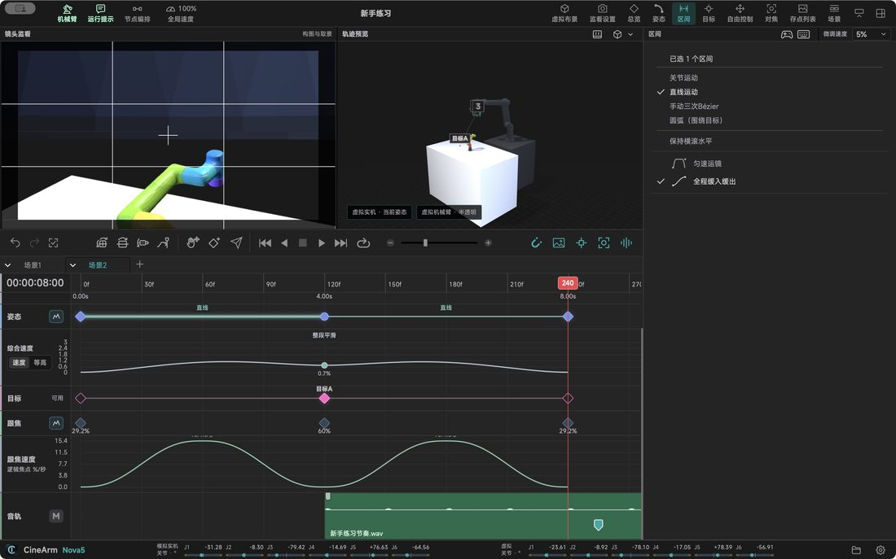

功能详解 / 速度：整条放慢，或只改某一段
速度：整条放慢，或只改某一段
同一条镜头可以整体放慢试跑，也能只调某一段的节奏，互不干扰。
先慢跑一遍整体降到 20% 走一次，保存的时间不用改。
段内节奏起步、加速、匀速、减速按镜头需要排。
经过不停穿过中间点时保持速度，不用刹停。
单独限速给某一张卡片单独限速，其余不受影响。
循环两个方向来回分开算，回程不会被首发速度拖慢。
开拍前看一眼结束或重开后速度会回默认，下次开拍前确认当前值。

本页内容对应 CineArm v0.1.46。